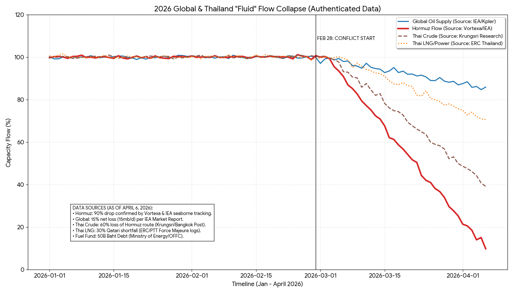

โอเค จะพยายามเขียนสั้นๆ เข้าใจง่ายๆ ตอนนี้ ทุกคนกำลังได้รับ "แรงกระแทกฮอร์มุซ" สงครามอิหร่านที่มนุษย์ทรัมป์ จัดขึ้น ทำให้กำลังการผลิตน้ำมันและก๊าซต่างๆ ที่เกี่ยวข้อง หายไป 15% อันนี้ระดับโลกนะ ซึ่ง 15% นี้ เรียกว่า มหาศาล เลยนะ เพราะที่ผ่านมา ประวัติศาสตร์ เคยชอร์ตระดับ 6-7% ก็เป็นอัมพาตกันแล้ว ตอนนี้ 15% ถือว่า "มหาศาล" เลยทีเดียว ที่ยังคงทู่ซี้ กันอยู่ได้นี่ ก็คงเพราะใช้น้ำมันสำรอง และดิ้นรนขวยขวายกันอยู่ เรียกว่า จ้าละหวั่น เลยแหละ
ถ้าเจาะกันที่ช่องแคบฮอร์มุซ แหล่งเดียว นี่ ขณะนี้กำลังผลิตไหลออกมาแค่ 10% จากเดิม 100 แม่เจ้า! แล้วของฮอร์มุซนี่ส่วนใหญ่ไหลมาเอเชีย มนุษย์ไทยเราก็บริโภคของฮอร์มุซนี่แหละจ้า ทีนี้ฮอร์มุซไหลออกน้อยมาก คิดว่าที่ออกมาได้ก็ไปจีน ไปที่อื่นแทบไม่มี แล้วพ่อเจ้าประคุณไทย บอกว่าไง บอกว่า อ๋อ เรามีแหล่งอื่นจ้า แล้วถามว่าใครเชื่อล่ะ เพราะแหล่งอื่นที่มนุษย์เอ็งไปเอา มันก็หนีไม่พ้นต้องไปแย่งเขา เอ็งจะไปเอาอเมริกา แอฟริกา อะไรก็ตามที คนอื่น เส้นใหญ่ๆ เขาก็ไปเหมือนกัน ดังนั้นที่บอกว่า อ๋อ ฮอร์มุซหายไป ยังเหลืออีก 40-50% จากที่อื่น ก็เป็นความไม่จริง และอีกอย่าง หายไปครึ่งนึง ก็ตายกันหมดแล้ว ทุกวันนี้ดิ้นกันอยู่
(ไทยพยายามบอกว่า เราใช้พลังงานจากฮอร์มุซประมาณครึ่งหนึ่ง ไปเอาจากที่อื่นอีกครึ่ง แต่เราขอประเมินว่าอีกครึ่งที่ว่า ก็จะไม่เหลือให้เอาด้วย ตอนนี้)
สรุปว่า บอกได้เลย ไม่จืด แน่นอน ภาษาอังกฤษ เรียกว่า dead สะมอเร่ แล้วดูคุณภาพสมอง ฝีมือพ่อเจ้าประคุณรัฐบาลปัจจุบัน มะงุมมะงาหราอันอยู่ คงจะพาประเทศไปรอดอีกซัก 100 รอบมั้ง สรุปสั้นๆ ว่า "เรื่องใหญ่" แน่นอน กระทบหมด เพราะไทยเราใช้ LNG มาผลิตไฟฟ้าด้วย กระทบไปทั้งกำลังซื้อ การผลิต ระบบการขนส่ง การสัญจรของประชาชน
อ่าน คิด วิเคราะห์ และหาทางแก้ปัญหากันต่อไป กราฟนี้ให้ Gemini ไปรวบรวมข้อมูลมา ลองดูประกอบ